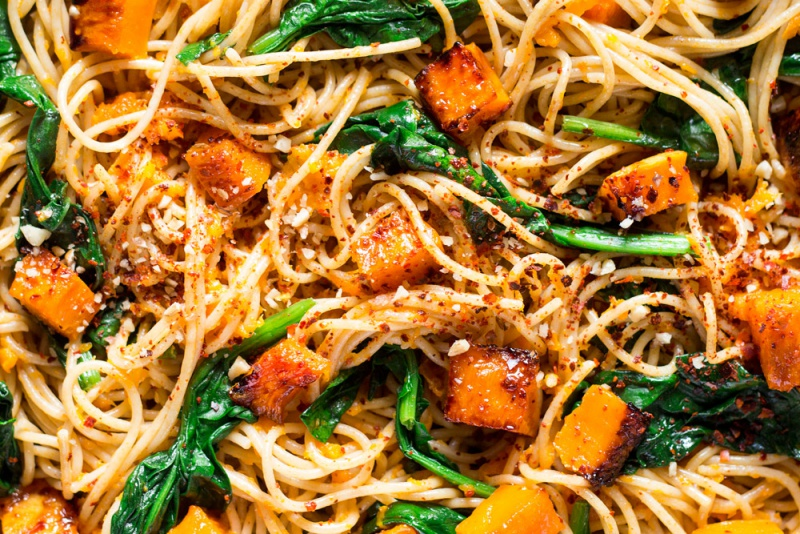
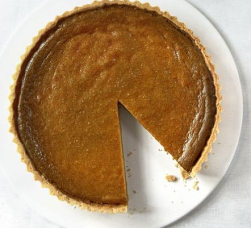
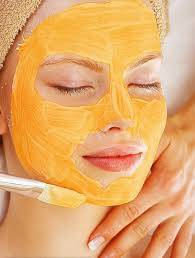

Pumpkin
Meal
Below are some delicious healthy meals you can try today!
Pumpkin spaghetti
Classic pumpkin pie
Hot pumpkin spice drink

Health
Pumpkin is an ultra nutritious produce, too! One cup of pumpkin contains more vitamin A than a cup of kale, more potassium than a banana, and more fiber than 1⁄2 cup of quinoa..
Health Benefits

The fiber keeps you energized.
One cup of canned pumpkin has about 7 grams of fiber. The fiber content of pumpkin will fill you up, help stabilize blood sugar, and keep your energy up throughout the day.
The minerals help your heart.
Pumpkin is loaded with blood pressure-regulating minerals like potassium, magnesium, and iron. They're necessary for providing oxygen to red blood cells.
Is canned pumpkin also good for me?
Yes! It doesn’t have to be fresh to get the same benefits. Unlike many other fruits and veggies, pumpkin is still loaded with nutritional benefits all year round in its canned form. One cup of canned pumpkin is vitamin- and mineral-rich, not to mention super-versatile.
Beauty
If you are cooking with pumpkin this season chances are you might have a little dab left over here or there. Do not throw it out, it’s beauty gold!
DIY recipes
Click here to find more DIY recipes!
- 1 cup pumpkin/li>
- 2 tbsps brown sugar
- 1 tbsp honey
- 1/2 cup of yogurt
You will need:
Instructions:
Mix together one cup of pumpkin, two tablespoons of brown sugar, one tablespoon of honey and a half cup of yogurt. (The sugar and yogurt are to exfoliate, the honey is a humectant.) Spread on to your face and let sit for 10 minutes, rinse with lukewarm water and pat dry